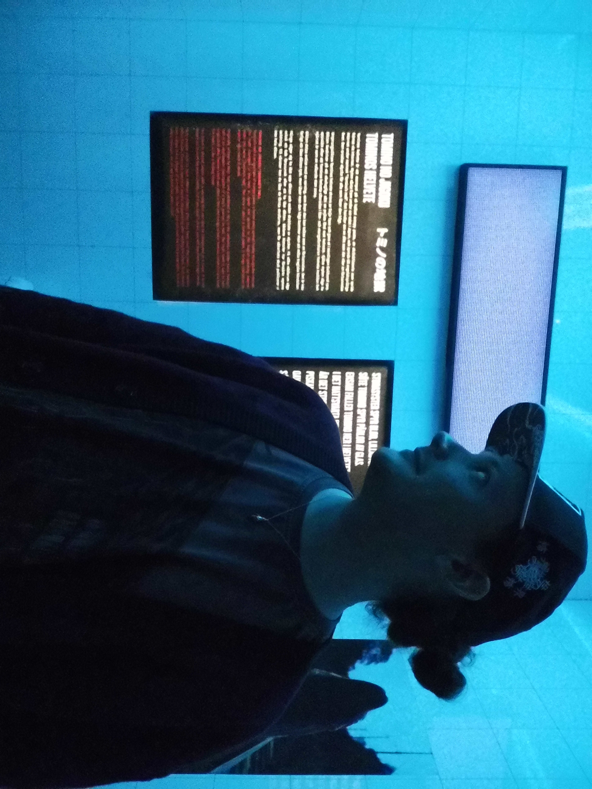

Games can be many things: escapism, a way to connect with others, art or just a fun pastime. The interactivity is of course at the forefront and no one would play a game that bores them. But all I know is that I wouldn’t have been the same person if my mom did not get that Xbox with Jet Set Radio Future back when I was 6. It’s almost like I just want to pay that experience forward to someone down the line. To my mom it was just “the game with an annoying soundtrack”, but to me it beautifully integrates and represents cultural aspects in a way that just seeps into your soul without you even thinking about it. Truly a masterpiece. Yeah I guess the long term goal is making a game that someone will gush about like this.
I would feel at home at a workplace where I get to share my thoughts about the project and my input is considered; I don't want to be a cog in the wheel where my ideas are shut down by principle. Because working on games I’m passionate about is the dream, and being passionate means thinking about how to make the game better and wanting to discuss this in meaningful & realistic ways!
Being part of a team shouldn’t mean working on my own thing in my corner of the project, then waiting for someone to tell me what my next thing to work on is. Playing the game and thinking “Ooo, this would make it better!” should be a fun experience to share and workshop with others, not a disheartening feeling of “Just stick to your lane”. Game development is working with other people; having the ability to hear people out and discuss ideas to filter out what will benefit the game the most is key to a successful game, in my opinion.
Between learning to program from scratch, not getting too rusty with my sound design and actually finding time to play games there isn’t really a big hobby.. I do have a chronic case of buying cool t-shirts (and cardigans too, as of late) but outside of hereditary hoarding habits I enjoy long walks in nature to factory reset the brain. Dungeons and Dragons has been a great pleasure too, every once in a while when my forever DM is not working himself to death.
Favorite Game of All Time: Jet Set Radio Future
Best Multiplayer: Heroes of the Storm, Hunt: Showdown 1896
Indie Classics: Blasphemous, Darkest Dungeon, Hollow Knight
Best FromSoftware: Dark Souls 3 > Sekiro: Shadows Die Twice > Dark Souls > Bloodborne > Elden Ring > Dark Souls 2